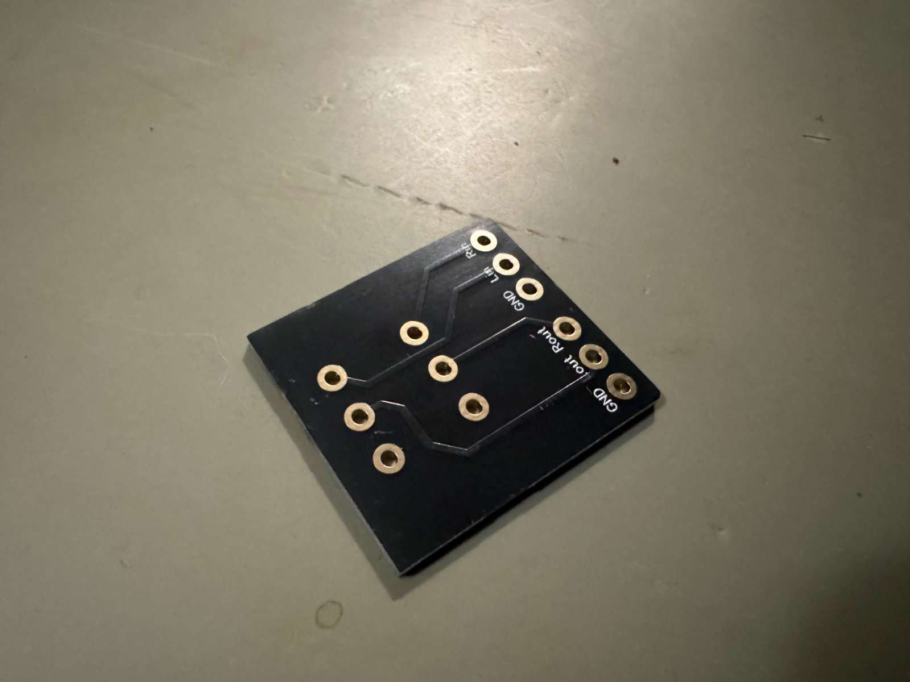
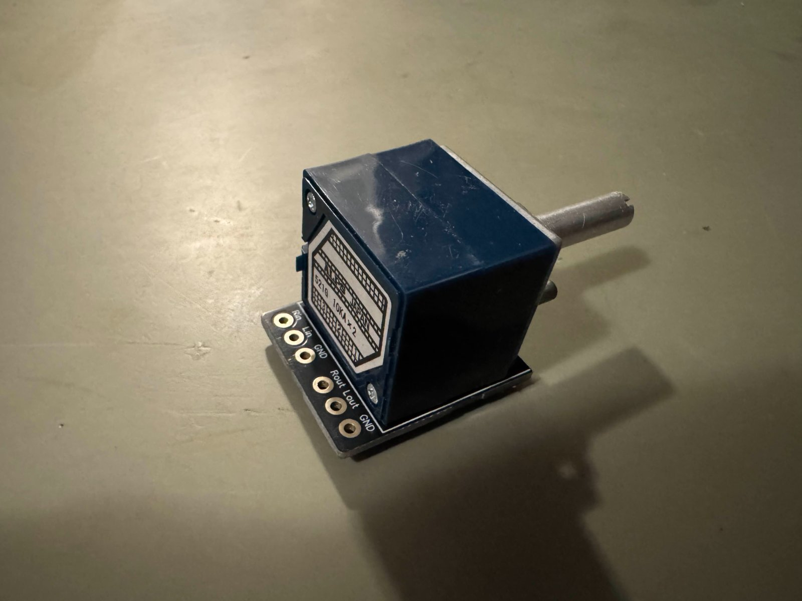
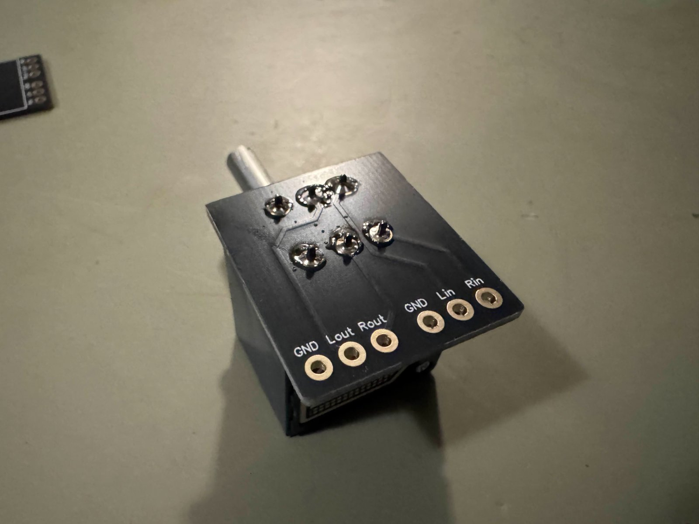

Alps RK27 Gold Plated Breakout Board
This is a breakout PCB for the Alps Blue Velvet, or by their part number RK27 potentiometers. These pots are very popular in DIY audio circles, and I have used them for a number of projects over the years. Unfortunately these potentiometers are designed for PCB mounting, so soldering bare wire to the terminals can be very difficult and finnicky.
I designed this PCB for my own in-house prototyping and found it to be more useful than alternative PCB solutions. Most designs are based around large, bulky connectors typically suited for power applications, not small signal applications. They are also usually large and add side to side width. This board does not do that, and adds a convenient set of holes to attach wires.
This boards been gold plated, and manufactured to a high tolerance. The quality of these PCBs is unmatched on the market, and the black color makes them stand out less. Silkscreen is double sided, making it easy to know which wires go where, regardless of orientation.
Does NOT include an Alps RK27. Photo in listing is for demonstration purposes only.
Board information: 28mm wide, 32mm deep, hole diameter is 1.5mm.